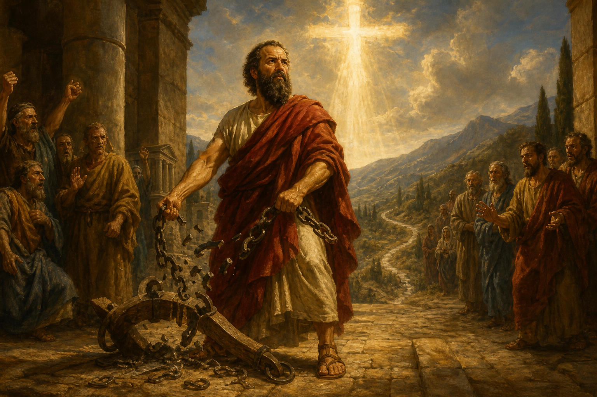

New Testament · Book 9 of 27
Galatians
Paul writes with urgency to churches being pulled back under the law, insisting that Christ alone, received by faith, sets a person free.
Alarmed that the Galatian churches are abandoning the gospel of grace for a message requiring circumcision and law-keeping, Paul writes his most forceful letter to defend justification by faith alone.
Stand fast therefore in the liberty wherewith Christ hath made us free, and be not entangled again with the yoke of bondage.
What happens in Galatians
Paul opens without his usual warmth, astonished that the Galatians are so quickly deserting the gospel he preached for a different one, and defends the authenticity of his apostleship and message as received directly from Christ rather than from men. He recounts confronting even Peter publicly when Peter's conduct implied Gentile believers needed to live like Jews, and argues at length that a person is justified by faith in Christ, not by works of the law, using Abraham's own faith as proof that righteousness has always come this way. He warns that returning to the law after starting in the Spirit is foolish, a reversal rather than a step forward, and he contrasts the law's role as a temporary guardian with the believer's new status as a child and heir of God. The letter's final chapters turn practical, urging the Galatians to use their freedom to serve one another in love rather than as an excuse for self-indulgence, and listing the works of the flesh against the fruit of the Spirit before closing with a final appeal to glory only in the cross.
Why it matters
Galatians became the rallying cry of the Reformation's insistence that salvation comes by grace through faith apart from works, and it remains the clearest biblical defense of that truth against any system that adds requirements to the gospel. Its portrait of the Spirit's fruit offers one of Scripture's most enduring pictures of Christian character.